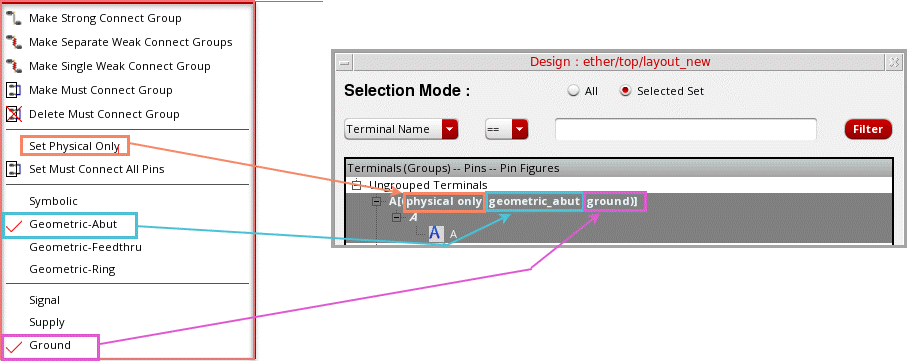
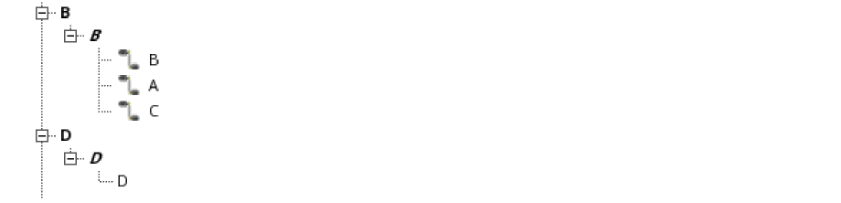
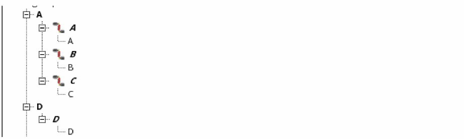
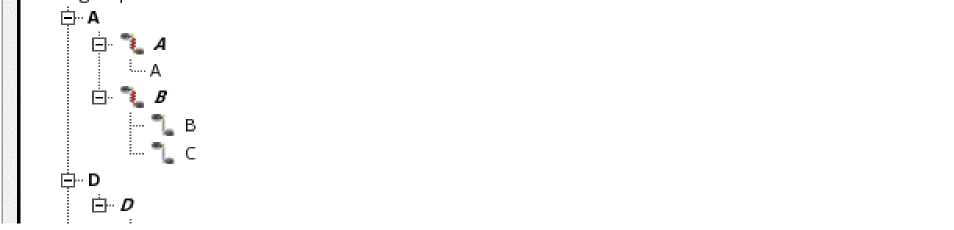
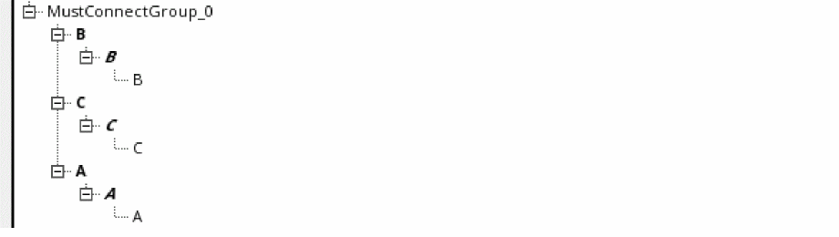

Setting a Pin Connectivity Model
To set a pin connectivity model:
-
Choose Connectivity – Pins – Pin Connectivity Setting.
The Pin Connectivity Model form appears.
The Pin Connectivity Model form lists all terminals, pins, and pin figures in the current design in a tree structure.
-
The first level in the tree structure lists the terminals in the design in bold, normal typeface, for example, A[(physical only|geometric_abut|ground)], which represents:
- The terminal name
- The physical configuration attribute (optional)
- The route and pin connectivity method (optional)
-
The signal type (optional)
- To show the physical configuration attribute, select the required terminal and choose Set Physical Only from the shortcut menu. To turn off this setting, select Unset Physical Only from the shortcut menu. By default, the setting is off.
-
To show the route and pin connectivity method, choose one of these options from the shortcut menu:
- Symbolic
- Geometric-Abut
- Geometric-Feedthru
- Geometric-Ring -
To show the signal type, choose one of the following options from the shortcut menu:
- Signal
- Supply
- Ground
- When you expand the first level, the pins in each terminal are displayed in bold, italic typeface; for example, A, B, C, D, E, F, Y, Z, gnd!, and vdd!.
- When you expand the pins, the pin figures are displayed in normal typeface; for example, A, B, C, D, E, F, Y, Z, gnd!, and vdd!.
-
The first level in the tree structure lists the terminals in the design in bold, normal typeface, for example, A[(physical only|geometric_abut|ground)], which represents:
-
Use the following options to filter the terminals, pins, and pin figures that are listed in the tree structure:
- All and Selected: By default all pins are listed. You can select the required terminals, pins, or pinFigs and then click Selected to restrict the list based on your selection.
- Terminal Name and Pin Name: Lets you filter pin names based on the specified terminal names or pin names.
- Expand All and Collapse All: Lets you traverse the tree structure.
The Pin Connectivity Model form is synchronized with the layout canvas. Any selection or change you make in the form is reflected in the layout canvas and conversely. For example, if you select a pin in the form, it is automatically highlighted in the layout canvas. After making changes to pins in the layout canvas, for example after creating a new pin, click Refresh in the Pin Connectivity Model form to see the changes in the form. - Right-click the individual terminals, pins, or pin figures for which you want to set a pin connectivity model.
-
Choose the required pin connectivity model. The available options are:
-
Make Strong Connect Group: The pin figure you select first is considered the anchor pin, and the A symbol is displayed beside its name. The selected pins are placed in a strong-connect group. All pins are moved to the terminal corresponding to the anchor pin. All empty terminals are deleted.You can also drag-and-drop a pin on another to create a strong-connect group.
-
Make Separate Weak Connect Groups: The pins are weakly connected and placed in separate pin groups. These pin groups are listed under the terminal of the anchor pin. All empty terminals are deleted.
-
Make Single Weak Connect Group: The pins are weakly connected and placed in single groups.
 -
Make Must Connect Group: The terminals are connected and are placed together in a must-connect group.To delete a must-connect group, right-click a terminal in the group and choose Delete Must Connect Group.
- Set Must Connect All Pins: The must-connect-all-pins model is applied to the selected terminal. To remove the setting, right-click and choose Unset Must Connect All Pins.
-
Make Strong Connect Group: The pin figure you select first is considered the anchor pin, and the A symbol is displayed beside its name. The selected pins are placed in a strong-connect group. All pins are moved to the terminal corresponding to the anchor pin. All empty terminals are deleted.
Alternatively, you can use one of the following methods to set a pin connectivity model:
Related Topics
Return to top